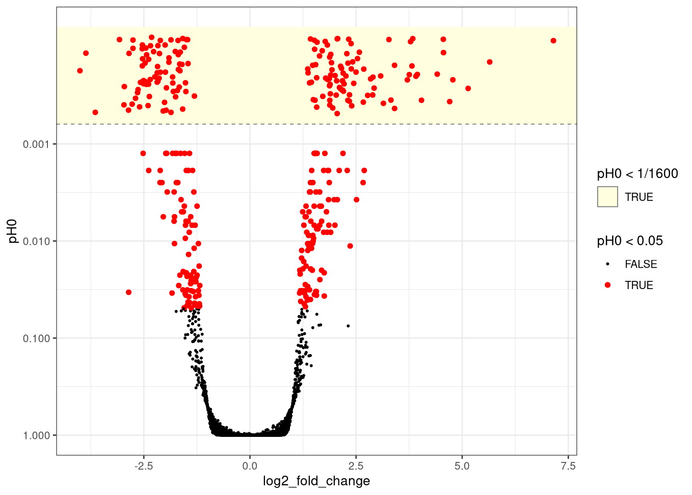

vignettes/brmDE.Rmd
brmDE.RmdbrmDE does mixed-effect modelling for differential gene
expression analyses, based on Bayesian regression through brms. Each gene is fit
on its own, then those fits compose into a tidytargets
targets pipeline. The typical flow is:
tidybulk::scale_abundance()) and set
offset = log(1 / multiplier)
tidybulk::estimate_dispersion())estimate_gene(), using that
dispersion as a prior on the negative binomial shape —
the gene’s own counts can still pull the posterior away from itStep 1 happens outside brmDE. The package does no
normalisation of its own: brmDE() and
estimate_gene() both expect the offset column to be on the
object already, so you stay in control of how library size is
handled.
Fitting chunks below are gated by
instantiate::stan_cmdstan_exists(), so the vignette still
builds when CmdStan is missing.
brmDE uses cmdstanr (not on CRAN) for the
default Stan backend. Three steps:
brmDE
cmdstanr
cmdstanr install of CmdStan itself
# from this repository
devtools::install()
install.packages(
"cmdstanr",
repos = c("https://stan-dev.r-universe.dev/", getOption("repos"))
)
cmdstanr::check_cmdstan_toolchain(fix = TRUE)
cmdstanr::install_cmdstan()
library(brmDE)
library(tidybulk)
library(tidySummarizedExperiment)
library(SummarizedExperiment)
data("airway", package = "airway")
airway <- airway |>
mutate(
dex = relevel(factor(dex), ref = "untrt"),
cell = droplevels(cell)
)For a single gene you still prepare the offset and dispersion on a
multi-gene matrix. After those columns exist, filter() the
feature set you want to fit. These steps do not need CmdStan.
Get the TMM multiplier from
tidybulk::scale_abundance(), then form the library-size
offset as log(1 / multiplier) with mutate()
from tidySummarizedExperiment.
se <- airway |>
identify_abundant(formula_design = ~ dex) |>
scale_abundance(method = "TMM") |>
# library size factor is the reciprocal of the multiplier
mutate(offset = log(1 / multiplier))
# Because tidybulk::estimate_dispersion() uses edgeR, which has no mixed
# models, write the fixed-effect analogue yourself:
# `dex + (1|cell)` becomes `dex + cell` and `dex + (dex|cell)` becomes `dex*cell`.
se <- se |> tidybulk::estimate_dispersion(formula_abundance = ~ dex + cell)
# One rowData column per estimate, named by dispersion_column and
# dispersion_degrees_freedom_column (defaults shown):
# dispersion = tagwise phi_g
# dispersion_degrees_freedom = d_eff = df.residual + prior.df
head(as.data.frame(rowData(se)[, c("dispersion", "dispersion_degrees_freedom")]))
#> dispersion dispersion_degrees_freedom
#> ENSG00000000003 0.006734047 10.60862
#> ENSG00000000005 0.069843933 10.60862
#> ENSG00000000419 0.007230741 10.60862
#> ENSG00000000457 0.008128609 10.60862
#> ENSG00000000460 0.024220581 10.60862
#> ENSG00000000938 0.069843933 10.60862
head(se$offset)
#> [1] -0.3214809 -0.4442212 -0.1827671 -0.7333862 -0.1757348 0.0000000formula_abundance is the mean model. For the gene-wise
fit it can include random effects; the library size offset goes here.
For tidybulk::estimate_dispersion() you already wrote the
fixed-effect analogue that edgeR can use.
formula_dispersion is the model for the negative
binomial shape, ~1 by default. It is where the edgeR
dispersion offset goes.
You write neither offset. Both are appended in the backend, and the assembled formulas are printed so you can confirm what was fitted:
Abundance model (offset added by brmDE): counts ~ dex + (1 | cell) + offset(offset)
Dispersion model (offset added by brmDE): shape ~ 1 + offset(log(1/dispersion))The edgeR columns are a prior, not a plug-in.
estimate_gene() centres the negative binomial shape on
1/dispersion and uses
dispersion_degrees_freedom to set how tightly; the
gene-wise likelihood is then free to move the posterior away from that
location. That is the point of bringing a whole-matrix estimate in this
way: it informs the fit when the gene is sparse, without locking the
shape to edgeR if the counts disagree. How far a gene can diverge is the
prior scale (d_eff) and the tail of
shape_prior (Student-t is more permissive than gamma).
dispersion and dispersion_degrees_freedom
both default to NULL. Leaving dispersion unset
puts a zero offset on the shape submodel (the intercept is then
log(shape) itself), which is useful when the sample size is
large enough that an informative location from edgeR is unnecessary.
Leaving dispersion_degrees_freedom unset gives the
Student-t intercept a log-scale SD of 1, so the prior scale does not
depend on previous tools. Computing both columns with
tidybulk::estimate_dispersion() and passing their names, as
below, is the preferred starting point.
The default shape_prior = "student_t" builds the shape
submodel from formula_dispersion and places a Student-t
prior on its intercept. With dispersion_degrees_freedom
passed in, the scale of that prior comes from
sqrt(trigamma(d_eff / 2)). Because the dispersion enters as
an offset on a log link, any terms you add to
formula_dispersion describe departures from edgeR’s
per-gene estimate, on top of the intercept’s ability to leave that
estimate when the data warrant it.
fit_t <- se |>
filter(.feature == "ENSG00000120129") |>
estimate_gene(
formula_abundance = ~ dex + (1 | cell),
offset = "offset",
dispersion = "dispersion",
dispersion_degrees_freedom = "dispersion_degrees_freedom",
family = brms::zero_inflated_negbinomial(),
chains = 1, # set for vignette build
draws_warmup = 100, # set for vignette build
draws_sampling = 150, # set for vignette build
cores = 1, # set for vignette build
refresh = 0, # set for vignette build
silent = 2 # set for vignette build
)
# Keep the dex main effect; drop the cell random intercept.
adjust_gene(fit_t, re_formula = ~0)Name the effect on its own and hypothesis_gene() asks
the question a DE analysis actually wants: is this effect big enough to
care about, and which way does it go?
# Is the dex effect bigger than one log2 fold change, and in which direction?
hypothesis_gene(fit_t, "dextrt")test_above_log2FC is the size an effect has to beat, in
log2 fold change units, so the default 1 asks for a
doubling of expression and 2 for a quadrupling.
pH0 is the probability that the better supported side is
wrong:
Both ways of being wrong are in that number, which is the point of
splitting the sides. Testing P(|effect| > threshold)
instead would add the two tails together, and a posterior sitting on
zero with heavy tails has mass beyond the threshold on both
sides at once — a large two-sided probability for an effect whose sign
is not even determined. Counting the sides separately cannot make that
mistake: pH0 is at least 1/2 for any posterior symmetric
about zero, whatever its tails, and climbs to 1 for a posterior lying
entirely inside the threshold. Setting
test_above_log2FC = 0 tests only the sign and gives the
local false sign rate.
Which way the effect goes is left to log2_fold_change.
There is no direction label: a gene whose posterior sits entirely inside
the threshold supports no direction at all, so labelling one would be
inventing a claim the fit does not make.
Because pH0 is a probability rather than a test
statistic, a false discovery rate follows by averaging: the expected
number of false discoveries in a set of genes is the sum of their null
probabilities, so the mean pH0 over the genes you selected
is the expected proportion of false discoveries among them.
Pipelines sort genes by pH0 and add that running mean as an
fdr column. No null distribution and no p-values are
involved, and since a cumulative mean of an ascending sequence is
already monotone, no Benjamini-Hochberg step-up is needed either.
One limit worth keeping in mind: pH0 is counted from
draws, so it cannot resolve below 1 / ndraws. A
pH0 of 0 means “smaller than this fit can measure”, and an
fdr far below 1 / ndraws is not supported by
the draws behind it. The fits in this vignette are deliberately short in
order to build quickly.
Writing the effect against zero instead,
hypothesis_gene(fit_t, "dextrt = 0"), fills
pH0 from a Savage-Dickey Bayes factor rather than by
counting draws. The effect size columns do not move, but the number now
needs prior draws (sample_prior = "yes" in
estimate_gene()) and a proper prior on the parameter, and
it is NA without them. The pH0_from column
records which of the two a row used, "posterior_draws" or
"bayes_factor", because a pH0 derived from a
Bayes factor carries assumptions the counted one does not. See
?hypothesis_gene for the full comparison.
The same test applies to random intercepts. Airway has four cell
lines; asking whether each cell’s intercept exceeds one log2 fold change
from the population mean is four hypotheses. class = "r"
tells brms to look among the group-level coefficients.
hypothesis_gene(
fit_t,
c(
"`cell[N052611,Intercept]`",
"`cell[N061011,Intercept]`",
"`cell[N080611,Intercept]`",
"`cell[N61311,Intercept]`"
),
class = "r"
)The same fit is worth looking at. plot_boxplot() draws
the TMM-normalised counts of one gene across a factor; the construction
is the same as sccomp’s boxplot. Black boxplots and points
are the counts, blue boxplots are draws from the posterior predictive
distribution. If the model is descriptively adequate, the blue boxplots
should roughly overlay the black ones.
The library size is always taken out, and through the model rather
than by dividing the counts: adjust_gene() predicts with
the offset zeroed, which for the TMM offset above leaves the normalised
abundance.
ENSG00000120129 is DUSP1, a dexamethasone-responsive
gene. The hypothesis above asked whether its dex effect clears one log2
fold change; the plot is that effect in the counts.
plot_boxplot(fit_t, factor = "dex", feature = "ENSG00000120129")Those counts still carry the cell-line intercepts, so for a mixed
model the dex contrast can be hard to see in one dimension.
remove_unwanted_effects = TRUE takes the random intercepts
out too, keeping dex alone, and redraws the posterior
predictive from that same reduced model.
plot_boxplot(
fit_t,
factor = "dex",
feature = "ENSG00000120129",
remove_unwanted_effects = TRUE
)plot_boxplot() returns a ggplot object, so further
layers can be added as usual.
For many genes, start a pipeline with brmDE(), then
append estimate(), hypothesis(), and
adjust(). Printing the object runs it (print
calls tt_evaluate()).
The pipeline fits genes and nothing else. Offset and dispersion are
whole-matrix quantities, so they are computed above, before any gene is
chosen; once those columns exist you can filter() any
feature set and pass that object in. Five genes are enough to show the
gene-wise branches that estimate() maps over; pass a local
crew controller to brmDE() so those branches
run in parallel on your machine (the default is sequential).
library(crew)
store <- tempfile(pattern = "brmde_")
pipeline <- se |>
filter(.feature %in% c(
"ENSG00000120129",
"ENSG00000000003",
"ENSG00000000005",
"ENSG00000000419",
"ENSG00000000457"
)) |>
brmDE(
store = store,
computing_resources = crew_controller_local(workers = 5)
) |>
estimate(
~ dex + (1 | cell),
offset = "offset",
dispersion = "dispersion",
dispersion_degrees_freedom = "dispersion_degrees_freedom",
family = brms::zero_inflated_negbinomial(),
chains = 1, # set for vignette build
draws_warmup = 100, # set for vignette build
draws_sampling = 150, # set for vignette build
cores = 1, # set for vignette build
refresh = 0, # set for vignette build
silent = 2 # set for vignette build
) |>
hypothesis("dextrt") |>
adjust(re_formula = ~0)
# Runs the targets graph
pipelineOne row per gene and contrast. estimate() contributes
the gene column; hypothesis() adds the columns that make
the run readable, unnested into the result rather than left in a list
column, and adjust() its own table. Each row carries
log2_fold_change and pH0 for that contrast,
the fdr those pH0 values give across genes,
and the convergence of that contrast’s own draws: rhat,
ess_bulk, and mcse, the Monte Carlo error of
the reported estimate, which you can read against the width
of the interval beside it. Those are diagnostics of the quantity being
reported rather than of the parameters behind it, which is the
distinction that matters in practice: a cell level that
drifts between chains cancels in a difference of levels, so the contrast
is often trustworthy when its parts are not. ess_bulk also
bounds how far pH0 can be trusted, since a probability
counted from draws cannot resolve below 1 / ndraws and
correlated draws are worth fewer than their number. That denominator is
not in the table, because it is a property of the fits rather than of
any row; estimate() records it on the pipeline instead,
which is what plot_volcano() reads it from below.
The fits themselves are not in the result. A brmsfit
carries its draws and its data, so twenty thousand of them cannot be
held in one object, and at that scale the statistics are what you want
anyway: they tell you which handful of genes to open. Those stay in the
targets store;
targets::tar_read(brms_fit, branches = i, store = store)
reads branch i. With bundle = 1 that is the
gene’s row in the result. The gene id is on the result, not on the fit:
pass feature = result$.feature[[i]] to
plot_boxplot().
result <- pipeline |> tt_evaluate()
result
# Open the gene whose contrast mixed worst. The gene id is on the result.
worst <- which.max(result$rhat)
targets::tar_read(brms_fit, branches = worst, store = store)
# plot_boxplot(..., factor = "dex", feature = result$.feature[[worst]])plot_volcano() draws that run as a volcano:
log2_fold_change against pH0 on a reversed log
scale, so the genes a run is about sit at the top. Genes below
significance_threshold (default 0.05) are
drawn red and larger. The shape is the tidybulk
volcano.
The one addition is the shaded band along the bottom.
pH0 is counted from draws, so it cannot resolve below
1 / ndraws, and at transcriptome scale a great many genes
come back as exactly 0 — which a log scale has nowhere to put. Those
genes are drawn in a band one decade below the dashed resolution line
and jittered across it. The band means “smaller than these draws can
measure”, and the spread inside it is there only to separate the points:
it is not a probability, and the axis is deliberately left unlabelled
there.
Note that it takes the pipeline, not the result. That is the reason:
the table cannot say how many draws are behind its own pH0,
since the fits stay in the store. The pipeline can.
estimate() records what it asked its fits for on the object
with tt_metadata() — the formulas, the column names, and
the sampling settings, defaults included — so
plot_volcano() reads the table out of the store and takes
the two entries it needs off the object:
chains * draws_sampling, here 1 * 150 draws.
tt_metadata(pipeline) prints the lot. Asking for the plot
evaluates the pipeline, exactly as printing it does, so it can also be
the first thing you call; targets skips what it already has, and here
everything is already built.
pipeline |> plot_volcano()Five genes make a thin volcano. plot_volcano() returns a
ggplot object, so a run holding several contrasts can be split with
+ facet_wrap(~ hypothesis), as the tidybulk
volcano facets by method.
The band earns its place at scale, so here is the same pipeline over
every abundant gene in airway rather than a hand-picked five. The setup
is the one at the top of this vignette with a single change —
keep_abundant() in place of
identify_abundant(), dropping the low-count genes instead
of only flagging them, which leaves 15,926 of airway’s 63,677. The run
itself uses the two scaling controls the sections below describe, a
crew.cluster controller and bundle.
library(brmDE)
library(tidybulk)
library(tidySummarizedExperiment)
library(crew.cluster)
data("airway", package = "airway")
# Whole-matrix quantities first: the pipeline fits genes and nothing else.
se <- airway |>
mutate(
dex = relevel(factor(dex), ref = "untrt"),
cell = droplevels(cell)
) |>
keep_abundant(formula_design = ~ dex) |>
scale_abundance(method = "TMM") |>
mutate(offset = log(1 / multiplier)) |>
estimate_dispersion(formula_abundance = ~ dex + cell)
pipeline <- se |>
brmDE(
store = "/path/to/brmde_store",
computing_resources = crew_controller_slurm(
workers = 100,
options_cluster = crew_options_slurm(
cpus_per_task = 2,
memory_gigabytes_per_cpu = 5
)
)
) |>
estimate(
~ dex + (1 | cell),
offset = "offset",
dispersion = "dispersion",
dispersion_degrees_freedom = "dispersion_degrees_freedom",
family = brms::zero_inflated_negbinomial(),
chains = 2,
draws_sampling = 800, # 2 * 800 = 1600 draws behind every pH0
bundle = 100 # 160 jobs rather than 15,926
) |>
hypothesis("dextrt")
pipeline |> plot_volcano()Sixteen thousand fits is a cluster job rather than a package build, so the figure below is a saved run of that code rather than one the vignette makes.

Three things in it are worth naming, because none of them appear in a p-value volcano.
The band along the top is full. Those are the genes whose
pH0 came back as exactly 0 from 1600 draws — not a
probability of zero, but one smaller than the draws can measure, which
is what the dashed line at 1/1600 marks. At this scale they
are most of the genes a run is about, so a log axis that simply dropped
them would drop the answer.
Just below the band the points fall into rows. A counted
pH0 is a whole number of draws over 1600, so near the
resolution it can only take a few values and the genes stack onto them.
Wanting to separate two genes that both sit on 2/1600 is
wanting more draws, and draws_sampling is where to ask for
them.
The floor is flat at exactly pH0 = 1, and stays flat out
to about one log2 fold change either side of zero. That is
test_above_log2FC = 1 drawn in the data: a gene whose whole
posterior lies inside the threshold has no draws beyond it on either
side, so 1 - max(p_+, p_-) is exactly 1. How far the floor
reaches is therefore the threshold less the width of the posteriors,
which is why it stops a little short of ±1. Those genes are
not “not significant” in the sense of a test that failed to reject. The
fit is positively saying the effect is small, and that is a claim a
p-value has no way to make.
On a cluster, pass a crew.cluster controller to
brmDE() as computing_resources. Gene-wise
targets then launch as SLURM jobs (run this block from a login node, not
in the vignette build).
library(crew.cluster)
pipeline <- se |>
filter(.feature %in% c(
"ENSG00000120129",
"ENSG00000000003",
"ENSG00000000005",
"ENSG00000000419",
"ENSG00000000457"
)) |>
brmDE(
store = "/path/to/brmde_store",
computing_resources = crew_controller_slurm(
workers = 100,
options_cluster = crew_options_slurm(
cpus_per_task = 2,
memory_gigabytes_per_cpu = 5
)
)
) |>
estimate(
~ dex + (1 | cell),
offset = "offset",
dispersion = "dispersion",
dispersion_degrees_freedom = "dispersion_degrees_freedom",
family = brms::negbinomial()
) |>
hypothesis("dextrt") |>
adjust(re_formula = ~0)
pipelineAt transcriptome scale, if the sample size is small and each gene
estimation is quick, the scheduler must handle tens of thousands of jobs
whose queueing cost can rival the fits themselves. bundle
is how many genes estimate() puts in each fit target,
fitted in sequence; the default 10 is ten genes per target,
and 1 is one target per gene. hypothesis() and
adjust() map over the fit target, so they inherit the
coarser branching without being told about it, and the result is still
one row per gene in the same order. On the other hand, if the sample
size is large and each gene estimation is slow, you should not bundle as
you risk less that the failure of one gene would compromise the whole
bundle.
pipeline <- se |>
brmDE(
store = "/path/to/brmde_store",
computing_resources = crew_controller_slurm(workers = 100)
) |>
estimate(
~ dex + (1 | cell),
offset = "offset",
dispersion = "dispersion",
dispersion_degrees_freedom = "dispersion_degrees_freedom",
bundle = 100 # 20,000 genes become 200 jobs of 100 fits each
) |>
hypothesis("dextrt")Pick bundle against a single job rather than against the
gene count, because that is exactly what it fixes: a job takes about
bundle times as long as one fit and lands on disk as a
single .rds holding bundle
brmsfit objects, whether you are running 200 genes or
20,000. Bundling also coarsens targets’ bookkeeping. A gene
that fails takes its bundle with it, and changing the gene set
reshuffles which genes share a bundle, so everything refits. Leave
bundle at 1 when you are iterating on a gene
set and relying on incremental reruns.
| Step | Column / target | Role |
|---|---|---|
tidybulk / tidySE, before brmDE()
|
colData "multiplier",
"offset"
|
TMM scale factor and log(1 / multiplier)
|
tidybulk::estimate_dispersion(), before
brmDE()
|
rowData "dispersion",
"dispersion_degrees_freedom"
|
edgeR and |
estimate() → estimate_gene()
|
brms_fit per gene, in the store |
posterior fit; edgeR dispersion is the shape prior, not a fixed value |
hypothesis() |
hypothesis table |
log2_fold_change and pH0 per gene,
rhat/ess_bulk/mcse per contrast,
plus fdr across genes |
adjust() |
adjusted residuals / fitted | dex kept; random intercepts dropped |
plot_boxplot() |
ggplot of one brmsfit
|
observed or adjusted counts across a factor, blue posterior predictive overlay |
plot_volcano() |
ggplot of the pipeline |
log2_fold_change against pH0, with
everything below 1 / ndraws jittered in a shaded band |
shape_prior |
Model for shape | Prior |
|---|---|---|
"student_t" (default) |
shape ~ 1 + offset(log(1/dispersion)), or
offset(0) if dispersion is
NULL
|
Student-t on the intercept; scale from d_eff, or
log-scale SD 1 if dispersion_degrees_freedom is
NULL
|
"gamma" |
scalar shape (no submodel) |
gamma(d_eff/2, d_eff * dispersion/2) (needs both
columns) |
prior.df from estimateDisp() is shared
across genes (unless robust = TRUE in edgeR). What varies
per gene is the tagwise dispersion that sets the prior
location. In either form the gene-wise counts update that prior: the
posterior shape is not forced to equal 1/dispersion.
The default prior set applies whenever prior is left
NULL and family is a negative binomial,
zero-inflated or not.
| Parameter | Prior | Set by |
|---|---|---|
Intercept |
student_t(3, mean(log1p(counts / exp(offset))), 1.5) |
the gene’s own data |
b (coefficients) |
student_t(coefficient_prior_df, 0, coefficient_prior_scale),
student_t(3, 0, 0.7) by default, one log2 fold change |
coefficient_prior_scale,
coefficient_prior_df
|
Intercept of shape
|
student_t(shape_prior_df, 0, scale) |
dispersion_degrees_freedom,
shape_prior_df
|
shape (scalar) |
gamma(d_eff/2, d_eff * dispersion/2) |
shape_prior = "gamma" |
Passing your own prior replaces the whole set.